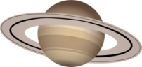

Saturn
Saturn is the Sixth planet from the Sun in Your Solar System. It is the second largest planet in Your Solar System. Its spectacular rings are made of ice chunks and rock. Like fellow gas giant Jupiter, Saturn is a massive ball made mostly of hydrogen and helium. Saturn has eighty-three moons, the main two being Enceladus and the giant moon Titan.